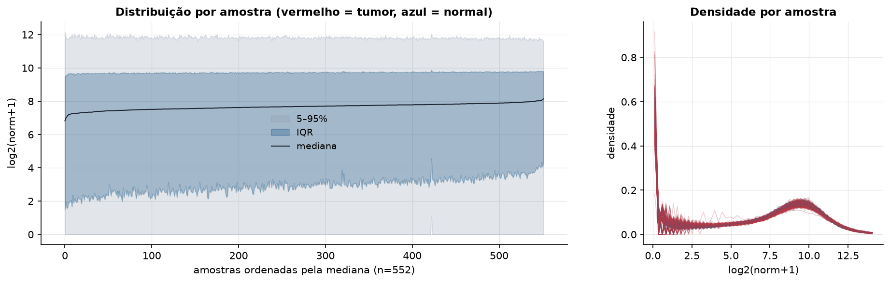
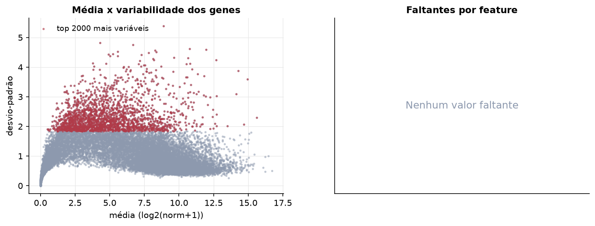
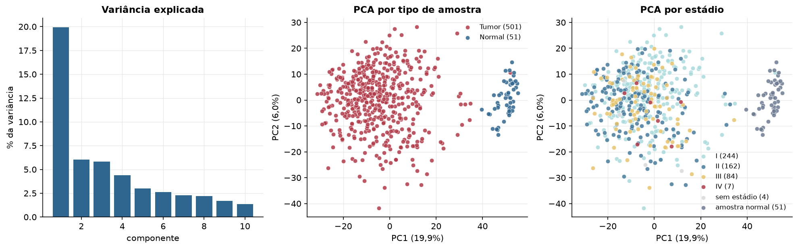
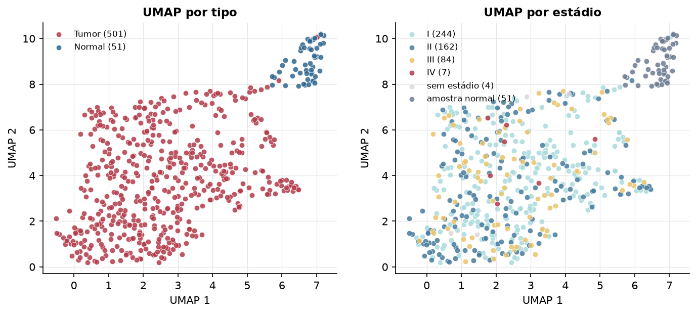
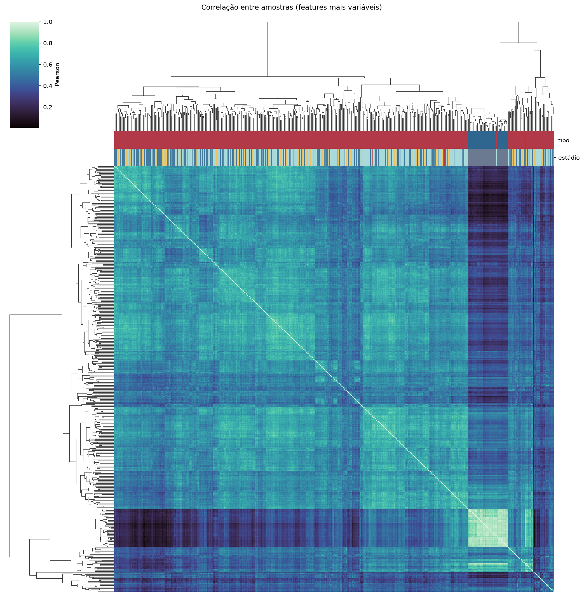
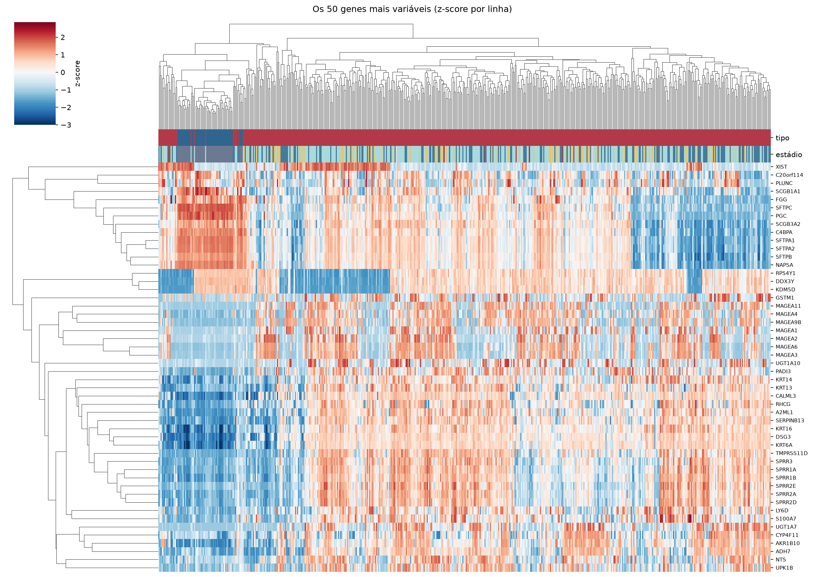
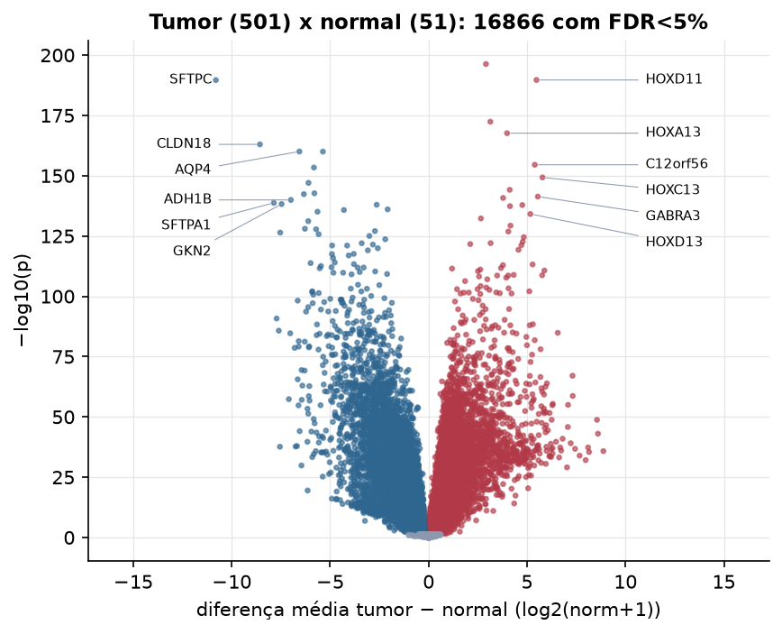
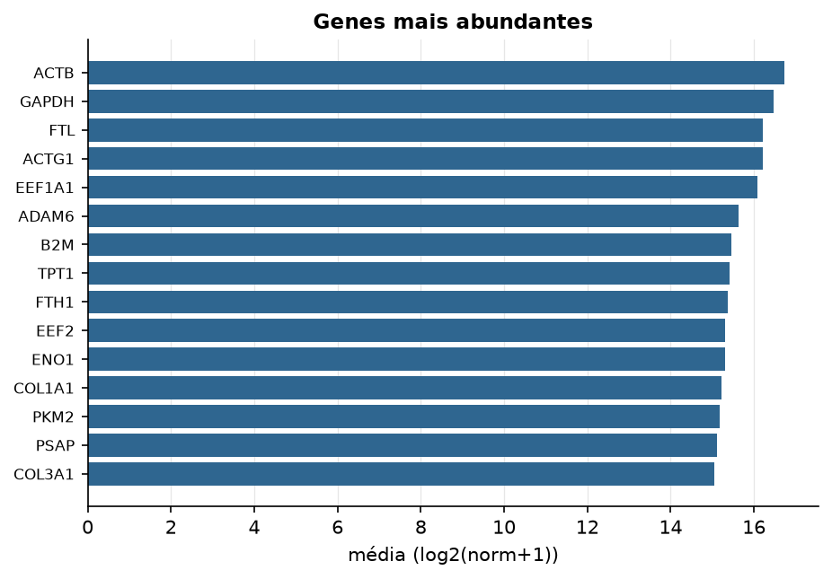

LUSC · RNA-seq (PanCanAtlas)
Illumina HiSeq, RSEM normalizado e corrigido por lote (EB++), log2(x+1) · gerado em 22/10/2026 01:29
20.531genes
501amostras tumorais
51amostras normais
0,0%valores faltantes
Fonte: PanCanAtlas EB++ via API do Xena
Estes valores já vêm normalizados e com correção de lote entre plataformas e centros. Servem bem para modelos gaussianos ou redes neurais; para um modelo de contagem use as contagens brutas do GDC.
Principais resultados
- 20.531 genes medidos em 552 amostras (501 tumorais e 51 normais); 0,0% dos valores estão faltando.
- Os dois primeiros componentes principais explicam 19,9% e 6,0% da variância das features mais variáveis.
- Correlação mediana entre amostras: 0,55.
- Amostras com correlação muito abaixo das demais (possíveis outliers técnicos): TCGA-37-4129-01.
- Tumor x normal: 16866 genes diferentes com FDR < 5% (8900 maiores no tumor, 7966 maiores no normal; 51 pacientes têm o par tumor-normal).
- Mais aumentados no tumor: GNGT1, HOXD11, KRTAP4-1, HOXA13, C12orf56, HOXC13, DLX6AS, GABRA3.
- Mais reduzidos no tumor: SFTPC, CLDN18, AQP4, C4orf31, FOLR1, SFTA3, C16orf89, NAPSA.
- Associações clínicas com p < 0,05 nos componentes principais: PC1 com estádio (p=0.00067); PC2 com estádio (p=0.0029); PC1 com sexo (p=0.00043); PC1 com idade (p=0.0002); PC1 com sobrevida (p=0.013).
- Em mediana, 82,9% dos genes têm expressão acima de log2(norm+1)=1 em cada amostra.
Distribuição dos valores


Estrutura das amostras




Tumor x normal

Features mais diferentes entre tumor e normal
| diferenca_tumor_menos_normal | t | p | fdr | |
|---|---|---|---|---|
| GNGT1 | 2.913 | 47.892 | 5.01e-197 | 1.01e-192 |
| HOXD11 | 5.48 | 48.417 | 2.08e-190 | 1.56e-186 |
| SFTPC | -10.806 | -47.878 | 2.31e-190 | 1.56e-186 |
| KRTAP4-1 | 3.136 | 42.298 | 4.13e-173 | 2.09e-169 |
| HOXA13 | 3.984 | 41.127 | 2.4e-168 | 9.74e-165 |
| CLDN18 | -8.57 | -53.295 | 1.02e-163 | 3.45e-160 |
| AQP4 | -6.563 | -40.679 | 9.26e-161 | 2.59e-157 |
| C4orf31 | -5.369 | -46.913 | 1.02e-160 | 2.59e-157 |
| C12orf56 | 5.393 | 52.128 | 2.91e-155 | 6.54e-152 |
| FOLR1 | -5.824 | -40.935 | 4.14e-154 | 8.38e-151 |
| HOXC13 | 5.785 | 50.116 | 5.13e-150 | 9.44e-147 |
| SFTA3 | -6.101 | -38.495 | 9.2e-148 | 1.55e-144 |
| DLX6AS | 4.12 | 41.311 | 7.15e-145 | 1.11e-141 |
| C16orf89 | -5.801 | -39.017 | 2.02e-143 | 2.91e-140 |
| NAPSA | -6.337 | -36.297 | 4.46e-143 | 6.02e-140 |
| GABRA3 | 5.548 | 51.123 | 4.65e-142 | 5.89e-139 |
| KRT74 | 3.785 | 37.941 | 1.72e-141 | 2.05e-138 |
| ADH1B | -6.996 | -44.141 | 1.11e-140 | 1.25e-137 |
| SFTPA1 | -7.863 | -36.913 | 1.84e-139 | 1.96e-136 |
| GKN2 | -7.468 | -54.362 | 5.78e-139 | 5.85e-136 |
| GYPC | -2.636 | -41.045 | 1.08e-138 | 1.04e-135 |
| AKR1B15 | 4.761 | 34.883 | 1.48e-138 | 1.36e-135 |
| HTR2C | 4.135 | 35.3 | 4.28e-138 | 3.77e-135 |
| ADPRH | -2.079 | -42.17 | 8.97e-137 | 7.57e-134 |
| GPR116 | -4.302 | -57.847 | 1.68e-136 | 1.36e-133 |
| C20orf56 | -5.644 | -44.007 | 8.59e-136 | 6.69e-133 |
| HOXD13 | 5.169 | 33.816 | 7.62e-135 | 5.71e-132 |
| LOC285548 | 2.656 | 33.89 | 5.34e-133 | 3.86e-130 |
| SFTPD | -6.113 | -37.679 | 7.1e-132 | 4.95e-129 |
| SYT14 | 4.16 | 35.284 | 5.01e-130 | 3.38e-127 |
Associação com variáveis clínicas
p-valores da associação dos três primeiros componentes principais (só tumores) com estádio (Kruskal-Wallis), sexo (Mann-Whitney), idade (Spearman) e sobrevida global (Cox univariado).
| estádio (Kruskal) | sexo (Mann-Whitney) | idade (Spearman) | sobrevida OS (Cox) | |
|---|---|---|---|---|
| PC1 (11,8%) | 0.000674 | 0.000426 | 0.000205 | 0.013 |
| PC2 (7,1%) | 0.003 | 0.677 | 0.054 | 0.557 |
| PC3 (6,5%) | 0.774 | 0.512 | 0.188 | 0.722 |
Mais abundantes
